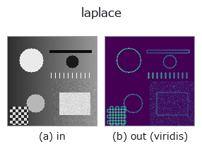

edges op• Data kinds: image → image
• Call: fullseye.apply(img, "laplace", a=0.5, b=0.5) (the 2-D model is one image plus two scalar knobs a,b∈[0,1])
• HALCON equivalent: laplace (the HALCON reference is a useful guide to its meaning and parameters)

*The figure is the actual output on a synthetic 128×128 input. Left: input, right: output. Point clouds are drawn as a top-down scatter (brightness = z), 1-D series as a line plot, volumes as the maximum-intensity projection along z, videos as the middle frame, complex images as magnitude; return values that are not pictures are shown as the values themselves.*
*The output is shown in a viridis-like pseudo-colour (dark purple = low, yellow = high) so that a field of quantities — distance, phase, orientation, depth — can be read.*
*Knob a does not change the output (measured: identical at 0.1 / 0.5 / 0.9).*
*Knob b does not change the output (measured: identical at 0.1 / 0.5 / 0.9).*
On other images (synthetic scene / photo / coins. Top row: inputs, bottom row: their outputs. Knobs at default):
▸ laplace: other inputs (docs site)
*The 4th column is a colour (H,W,3) input. This op handles colour without crossing channels (it does not convolve the colour channel as a third spatial axis).*
The normalized absolute value of the Laplacian (`ndimage.laplace, a second derivative via finite differences). A non-directional second-derivative edge detector, more sensitive to high-frequency noise than Sobel-type filters. Corresponds to HALCON's laplace` (Calculate the Laplace operator by using finite differences).
> The detailed description below is the original text — the summary and the headings are translated.
`a, b` は未使用。ノイズを抑えたい場合は事前にぼかすか
`laplace_of_gauss`(ガウス平滑化込み)を使う。
• gallery2d_edges family guide
• Sample-data catalog (download URLs / licences) — 2-D uses skimage.data (BSD/public domain) plus synthetic images; 3-D lists download URLs for real data sources (Stanford, PDS, …).
• Operator provenance and references — the sources of the research/methods this op family came from.
• The canonical algorithm (author, year) and its uses are named in the family usage guide above.
The program below has been verified to run (same input as the figure). In Studio's help this block becomes buttons that load and run it on the spot.
laplace 0.40 0.50
▸ Load this pipeline · Load & run
• gallery2d_edges — py -3.11 examples/gallery2d_edges.py
• poc_focus_stacking — py -3.11 examples/poc_focus_stacking.py
• poc_white_balance — py -3.11 examples/poc_white_balance.py
image as input)identity · gaussian · mean_box · bilateral · unsharp · median · min_filter · max_filter
edges)sobel_mag · prewitt_mag · roberts_mag · dog · grad_dir · log · corner_response · sk_scharr
*Provenance: ops.py — 2D operator registry. This per-op note is generated by tools/opdocs.py md (do not hand-edit).*
© 2026 Kazufumi Furuse — Fullseye operator documentation. Licensed under Apache-2.0.
{kind=link}